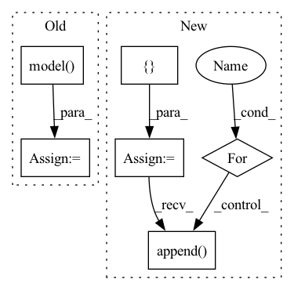

Pattern ID :42024
Before Change
for i in inputs:
inf_inputs.append(Perturbation.perturb_tensor(i, self.reg_params.n_samples).float().cuda())
inf_output = self.model( inf_inputs)
inf_loss = torch.nn.functional.binary_cross_entropy_with_logits(inf_output, expanded_logits)
gradients = torch.autograd.grad(inf_loss, inf_inputs, create_graph=True)
grads = [Regularization.get_batch_norm(gradients[k], loss=inf_loss,After Change
expanded_logits = Perturbation.get_expanded_logits(logits, self.reg_params.n_samples)
inf_inputs = []
inf_inputs_len = []
for ind, i in enumerate(inputs[0]):
inf_inputs.append(Perturbation.perturb_tensor(i, self.reg_params.n_samples).float().cuda())
inf_inputs_len.append( Perturbation.perturb_tensor(inputs[1][ind], self.reg_params.n_samples,False))
inf_output = self.model([inf_inputs, inf_inputs_len], training=True)
inf_loss = torch.nn.functional.binary_cross_entropy_with_logits(inf_output, expanded_logits)
In pattern: SUPERPATTERN
Frequency: 3
Non-data size: 6
Instances Fragment ID: 117752898
Project Name: pliang279/multibench
Commit Name: c54605f2e0f9be6777682e7598449cf2b1cd3898
Time: 2021-04-07
Author: ztwu_nil@zju.edu.cn
File Name: objective_functions/regularization.py
M Class Name: RegularizationLoss
N Class Name: RegularizationLoss
M Method Name: forward(3)
N Method Name: forward(3)
M Parent Class: torch.nn.Module
N Parent Class: torch.nn.Module
M File Name: objective_functions/regularization.py
N File Name: objective_functions/regularization.py
M Start Line: 228
M End Line: 243
N Start Line: 233
N End Line: 250
Before Change
for i in inputs:
inf_inputs.append(Perturbation.perturb_tensor(i, self.reg_params.n_samples).float().cuda())
inf_output = self.model( inf_inputs)
inf_loss = torch.nn.functional.binary_cross_entropy_with_logits(inf_output, expanded_logits)
gradients = torch.autograd.grad(inf_loss, inf_inputs, create_graph=True)
grads = [Regularization.get_batch_norm(gradients[k], loss=inf_loss,After Change
expanded_logits = Perturbation.get_expanded_logits(logits, self.reg_params.n_samples)
inf_inputs = []
inf_inputs_len = []
for ind, i in enumerate(inputs[0]):
inf_inputs.append(Perturbation.perturb_tensor(i, self.reg_params.n_samples).float().cuda())
inf_inputs_len.append( Perturbation.perturb_tensor(inputs[1][ind], self.reg_params.n_samples,False))
inf_output = self.model([inf_inputs, inf_inputs_len], training=True)
inf_loss = torch.nn.functional.binary_cross_entropy_with_logits(inf_output, expanded_logits)
Fragment ID: 117752924
Project Name: pliang279/multibench
Commit Name: 0e0c7a49dc117cdb06f01380158e60a7ab4e0040
Time: 2021-04-07
Author: ztwu_nil@zju.edu.cn
File Name: objective_functions/regularization.py
M Class Name: RegularizationLoss
N Class Name: RegularizationLoss
M Method Name: forward(3)
N Method Name: forward(3)
M Parent Class: torch.nn.Module
N Parent Class: torch.nn.Module
M File Name: objective_functions/regularization.py
N File Name: objective_functions/regularization.py
M Start Line: 228
M End Line: 243
N Start Line: 233
N End Line: 250
Before Change
uu = UnNormalizeTransform()
for inputs in dloader:
inputs = inputs.to(self.device)
outputs = self.model( inputs)
for out in outputs:
save_image(uu(out), "{}_{}.png".format(eval_img_prefix, n))
n += 1After Change
"""
for model_output in self._eval_model(dloader):
ret_batch = []
for img in model_output:
img = img.detach()
if not untransform is None:
img = untransform(img)
ret_batch.append( img)
yield torch.stack(ret_batch)
Fragment ID: 117752921
Project Name: anderzzz/monkey_caput
Commit Name: b02a753f05762e4bfb07f3388c39b395e124f1db
Time: 2020-10-28
Author: ohrn.anders@gmail.com
File Name: ae_learner.py
M Class Name: AELearner
N Class Name: AELearner
M Method Name: eval_model(3)
N Method Name: eval_model(3)
M Parent Class: _Learner
N Parent Class: _Learner
M File Name: ae_learner.py
N File Name: ae_learner.py
M Start Line: 79
M End Line: 93
N Start Line: 122
N End Line: 130